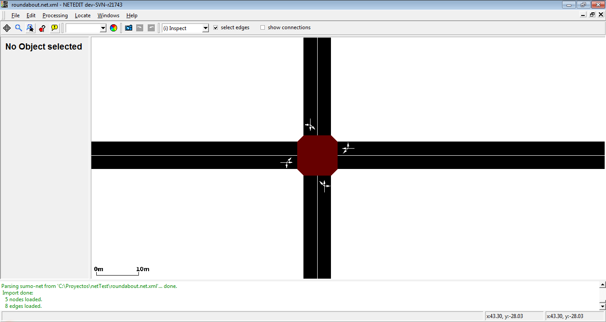
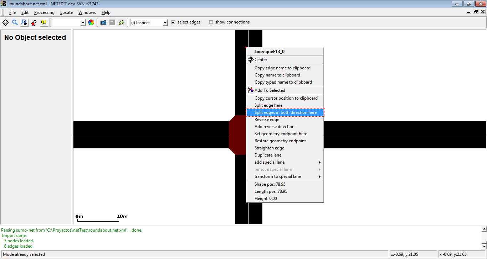
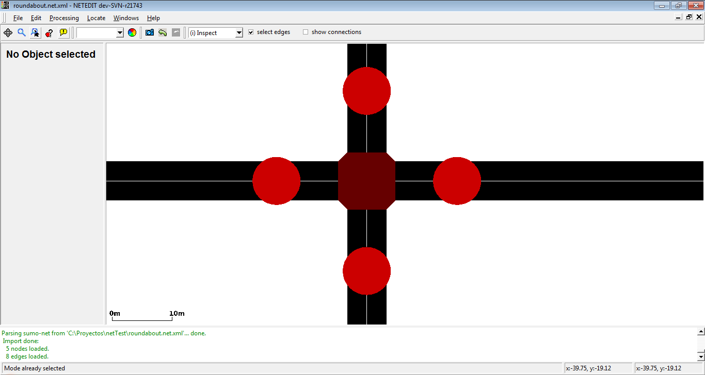
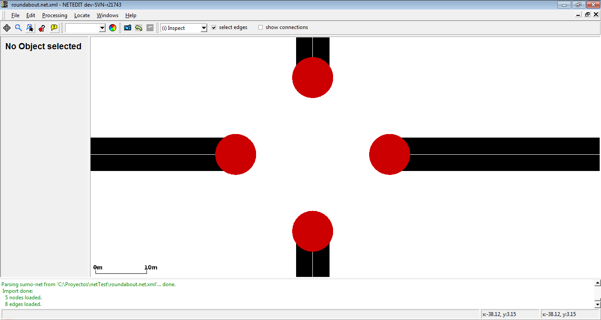
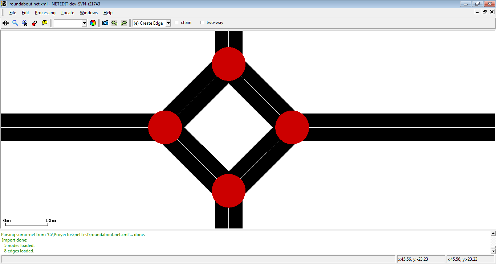
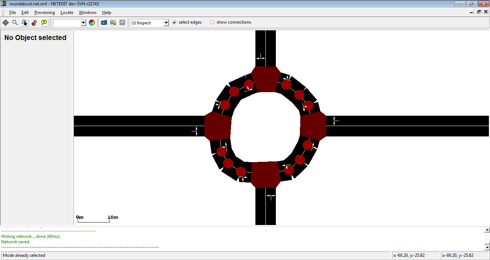
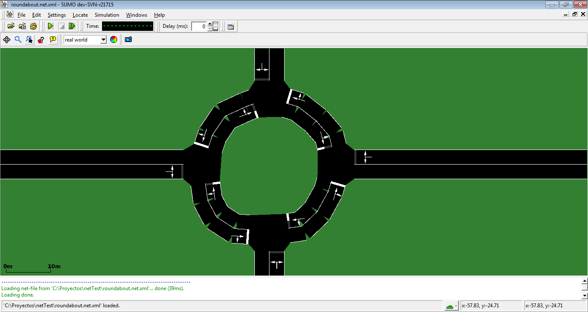
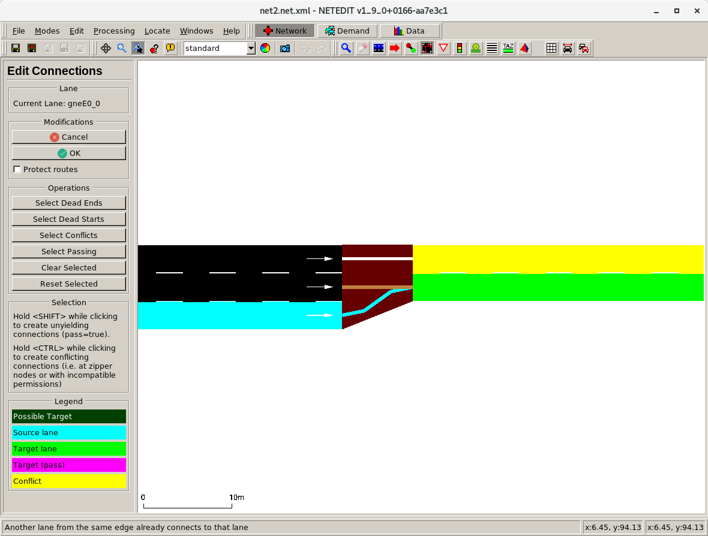

Usage Examples#
Reducing the extent of the network#
- switch to selection mode
- enable the auto-select junctions checkbox in the top menu bar
- select the portion of the network you wish to keep (i.e. by holding <SHIFT> and performing a rectangle-selection)
- invert the selection with the Invert button
- delete the inverted selection using the <DELETE> key
Caution
If the checkbox auto-select junctions is not set, and connections are not visible during the rectangle selection, all connections will be removed during the invert+delete steps.
Adapting additional objects to a reduced network#
Either
- load the additional file when cutting and then save the reduced additional file or
- open the reduced network and load the original additional file. All objects outside the reduced network will be discarded with a warning.
Specifying the complete geometry of an edge including endpoints#
By default, the geometry of an edge starts with the position of the source junction and ends at the position of the destination junction. However, this sometimes leads to undesired junction shapes when dealing with roads that have a large green median strip or when modeling edges that meet at a sharp angle such as highway ramps. Also, when edges in opposite directions have unequal number of lanes (i.e. due to added left-turn lanes) and the road shapes do not line up. The solution is to define an edge geometry with custom endpoints. Below are three alternative methods of accomplishing this.
Using 'Set geometry endpoint'#
- switch to move mode
- shift-click near the start or the end of the edge to create/remove a custom geometry endpoint (marked with 'S' at the start and 'E' and the end).
- once create these special geometry points can be moved around like normal geometry points
Caution
When right-clicking the geometry point the click must be within the edge shape for this too work.
Afterwards, you will have to recompute the junction shape to see how it looks (F5). If you want to modify the edge and it's reverse edge at once this works almost the same way:
- switch to select mode
- select both edges
- switch to move mode
- create/move geometry points for that edge
- create new geometry points where the endpoints of the edge should be
- switch to select mode
- deselect both edges
- right-click on the new endpoints and select Set geometry endpoint here twice (once for each edge)
Entering the Position manually#
- switch to inspect mode
- click on the edge that shall be modified
- enter new values for attributes shapeStart or shapeEnd
Using 'Join Selected Junctions'#
- create new junctions where the endpoints of the edge should be
- Either split an existing edge (right-click and select Split edge here)
- Or create a new edge with new junctions in create-edge mode
- switch to select mode
- select the original junction and the new junction near it
- Menu Processing -> Join Selected Junctions (F7)
This will create a single joined junction but keep the endpoints at the original junction positions.
Setting connection attributes#
- after opening the network press F5 to compute connection objects
- in inspect-mode enable the Show Connections checkbox in the menu bar
- click on a connection to inspect it and edit its attributes
Converting an intersection into a roundabout#
- set junction attribute 'radius' to the desired roundabout radius
- right-click on junction and select 'Convert to roundabout'
Converting an intersection into a roundabout (old manual method)#
- For each of the 'legs' of the intersection do a right click and select 'split edges in both directions' at some distance from the intersection (this will be the radius of the roundabout)
- Delete the central intersection
- Connect the new intersections with one-way roads going in a circle
- Tweak the geometry of the roundabout by creating additional geometry points in move mode to make it more rounded. You can also use the function 'smooth edge' from the edge context menu.
- Check for correct right of way (the inside edge should have priority over the entering edges). This should work by default but may fail if the shape of the roundabout is not 'round' enough. Either correct the geometry or assign a higher priority value to the roundabout roads (compared to the adjoining roads)
Assuming you have a regular intersection
- Visual example
We have a intersection (Junction) with four edges. Split edges in both direction in every edge to create new junctions.
Intersection with the new junctions. Remove central Junction.
Connect new junctions circularly. Move shape of new edges to obtain a circular shape.
Roundabout in Simulator.
Correcting road access permissions#
In this example we wish to modify a multi-modal road network (i.e. imported from OpenStreetMap) in the following way: All dedicated bus lanes should allow bicycle access.
- in select-mode, use the Match Attribute panel to select all Lanes with attribute allow that match the string =bus (the '=' forces exact matches). All dedicated bus lanes are now selected
- in inspect-mode, click on one of the selected lanes and modify the allow attribute from bus to bus bicycle
Changing all traffic lights to right_on_red#
- in select-mode, use the Match Attribute panel to select all Junctions with attribute type that match the string traffic_light
- in inspect-mode, click on one of the selected junctions and set the type attribute to right_on_red
Creating joined traffic lights#
- make sure all junctions that shall be jointly controlled are of type traffic_light
- (optionally) select all of the above junctions
- use inspect mode to set the same value for the 'tl' attribute of all junctions that shall be jointly controlled (if the junctions are selected, you can set the 'tl' value for all of them at the same time, otherwise you must set the value individually)
Adapting Visualization Settings to help editing complicated intersections#
Editing complex intersection clusters with many short edges can be difficult with the default visualization settings. The following settings may help
- Junction settings
- lower value for exaggerate by (junction shapes drawn with reduced size)
- deactivate draw junction shapes (alternatively to reduced size, do not draw junction shapes at all)
- color by selection
- Streets
- lower value for exaggerate by (draw thin edges)
- deactivate show right of way rules (to avoid hiding short edges)
- color by selection
When setting coloring to by selection it may also help to modify transparency for selected or unselected edges.
Defining a linear referencing scheme (kilometrage / mileage/ chainage)#
- Define a route through your network along which you want to define kilometrage (in forward direction)
- (optional) Use inspect mode to et the initial distance value of the first edge of the route (default 0) 3) Right click the route element (in demand mode) and select 'Apply distance along route'
Creating bidirectional railway tracks#
Make an existing track bidirectional#
Using visualization options or attribute selection you can check whether an existing railway track can be used in both directions. To make a unidirectional track usable in both directions,
- set the edge attribute spreadType to the value center (in many cases this value is already set as it is the default value when importing tracks).
- right-click the edge and select edge operations->add reverse direction for edge
Creating bidirectional tracks from scratch#
- use Create Edges to create an edge
- use Inspect to set the edge attribute allow to rail (or a combination of one or more railway vehicle classes)
- set edge attribute spreadType to center
- set the new edge as Edge template
- make the edge bidirectional as explained above in Make an existing track bidirectional
- in Create Edges, set the checkbox to Two-way and optionally to Chain
- continue to created edges. Each click will create bidirectional track
Creating a zipper merge#
- use inspect mode to set junction type to 'zipper'
- use connection mode to add 2 connections which enter the zipper junction with the same target lane. The second connection must be created with CTRL+Click to override conflict protection.
- optionally: use inspect mode and enable 'show connections' (Alt+5). Click on the zipper connections (brown) and customize 'visibilityDistance' to set the range where vehicles start zipper merging.
